前言：这篇东西写到最后，已经超出我预想的范围了。2022是特殊的一年，谨以此文做些片面的记录，证明我来过、事情发生过。
山野之间
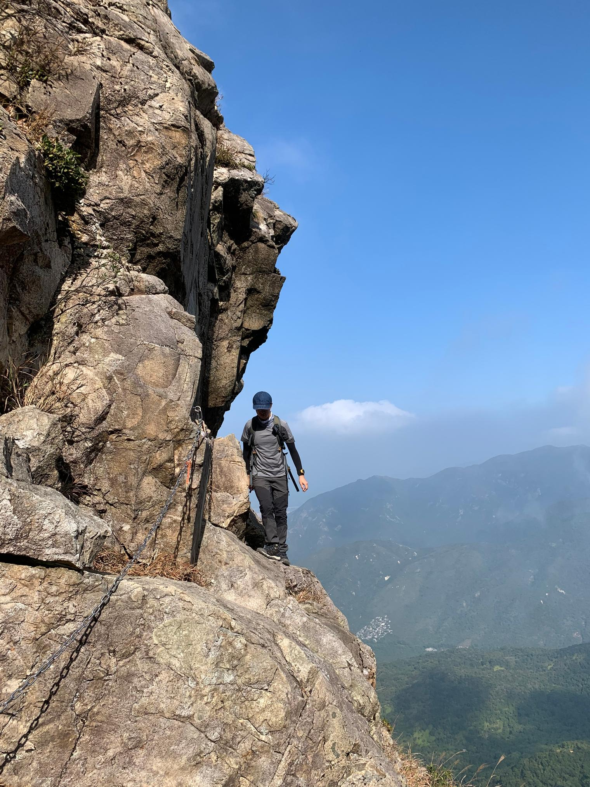
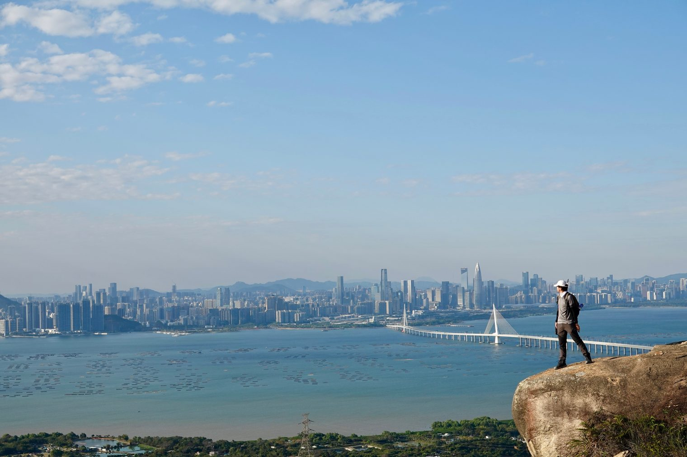
承接2021后半的节奏，2022的起始记忆锚点是1月里两次非常美好的香港山野体验：凤凰山的罗汉塔+南北天门，以及青山腹地的大石坠谷+灵虚谷。二者在景色方面颇有不同，凤凰有云雾日照，青山有峡谷奇形、海湾对望。共同点则是老生常谈：香港的另一面。山海与城市像是两个次元，对立、矛盾却也能自洽，正如人心，直到今日我仍然为此感到惊叹。
站在青山眺望，对岸的深圳是这么远又那么近。
停滞的日子
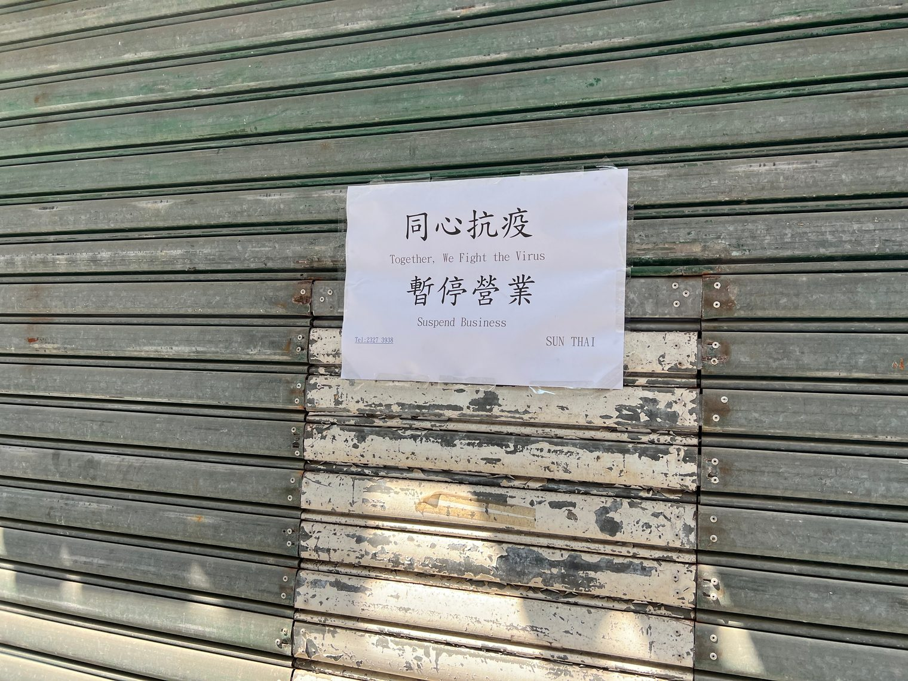
二月对全香港的人来说，都是困难的一个月。疫情爆发不断新高，抗疫政策不断收紧，街道上萧条的景象远甚于过年。公司实行了远程办公，加上前几个月里高强度的户外活动引致膝盖旧伤复发，于工作于生活都没有了频繁外出的理由。并没有真正的强制力，但我几乎整个月都把自己关在房里，只有在下楼买外卖的时候才放个风，时间就像是停滞了。这是时代的沙，没有人可以幸免，但我们至少可以去记录。
唯一鲜亮一些的记忆是一次午间散步，那是一个极其明媚的星期五，我带着刚买不久的新手机在金钟一带试拍，第一次体会到了长焦的魅力。
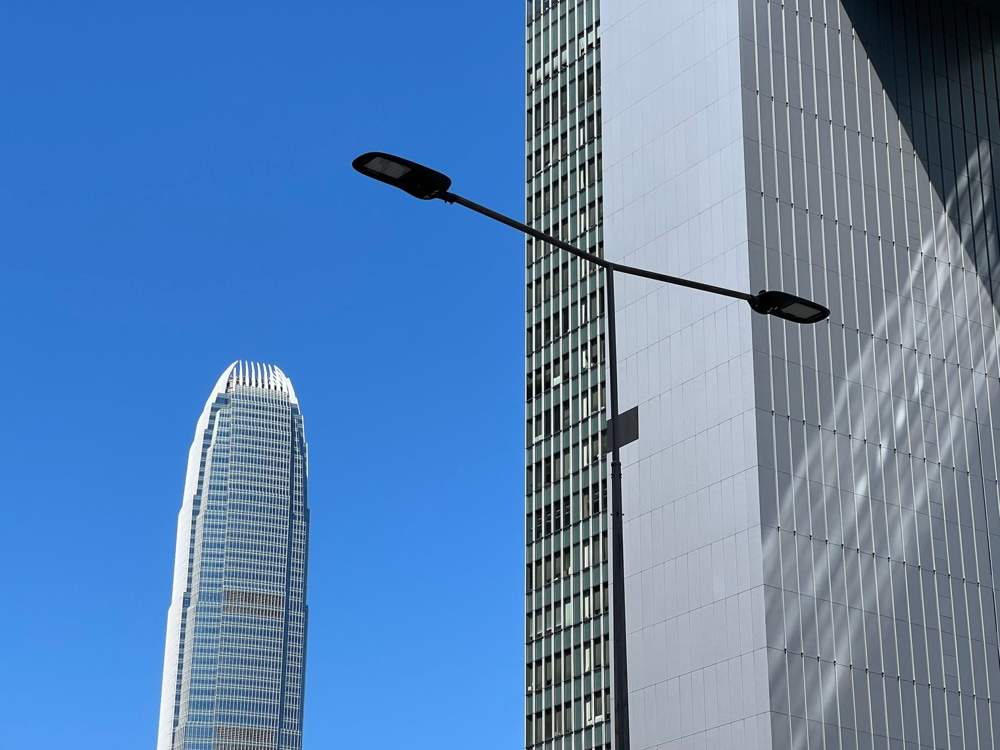
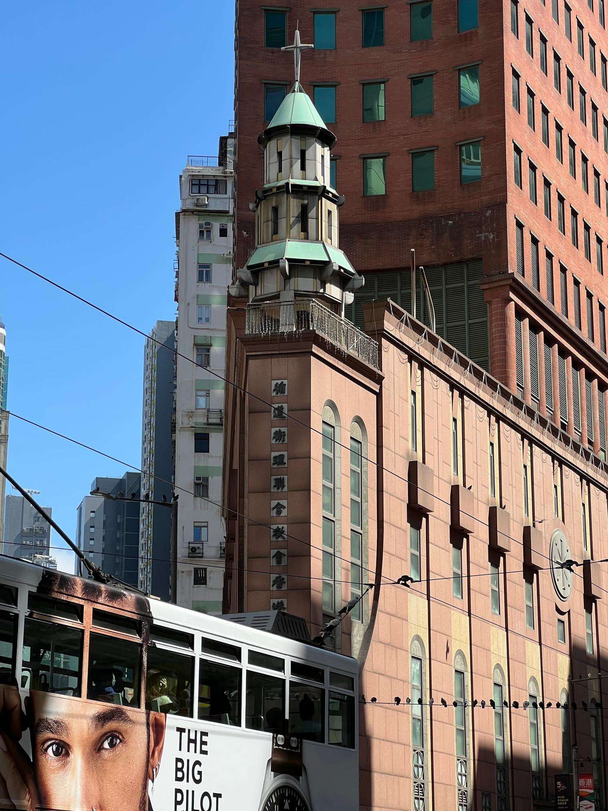
插柳
三四月里情势好转，膝盖恢复缓慢，所以參加了一些平时已不太感兴趣的户外活动，却也有很多收获。
比如回南天里太平山的雾色：
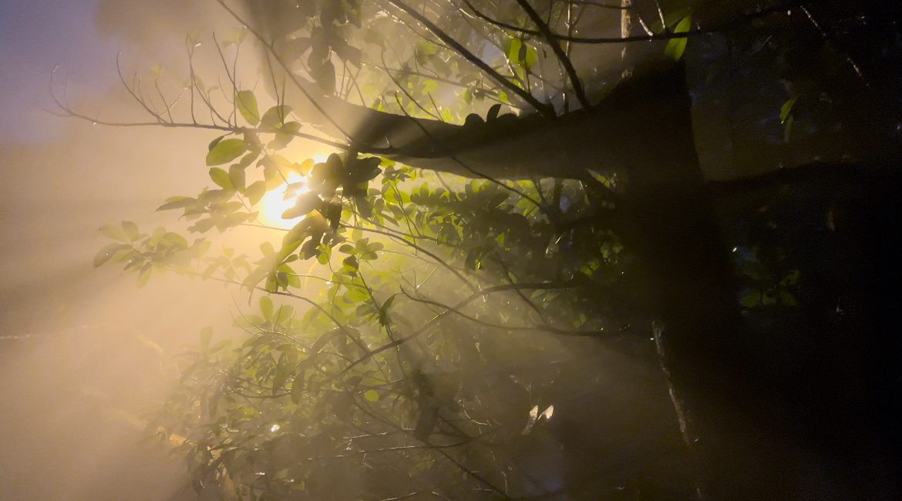
又比如一次预想中简单的行山，最后（又一次）变成了爆林挑战（God bless my knees）。犹记得艰难的下坡中途到了一片相对平坦的石涧，整个人平躺望着树木镶嵌的天空。身处幽暗之中错觉天色已晚，可其实外面的阳光依旧灿烂。
很享受那一刻的宁静。
但对我来讲那天更大的收获其实是友谊的树苗，之后很多美好的记忆皆可追溯至此，也在其中获得了一些成长。如今一晃已是新的一年，致朋友们，尽在不言中。
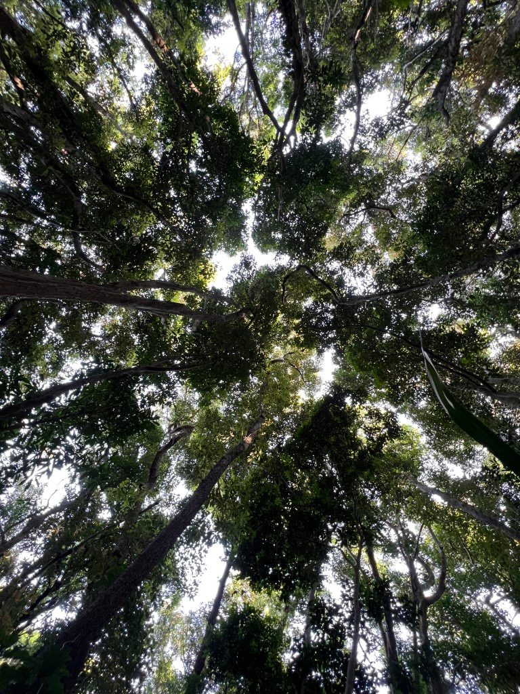
Let it happen
五月的末尾，我在没有下家的情况下，留下几盒没太发挥过作用的名片，离开了供职接近6年的公司。职业身份的变动，这大概是世俗意义上，我这一年里发生的最重要的事情。
脱去了外界给你的身份标签，你又是谁呢？众人皆知标准答案是：你还是你。但正如我一次写下的：“不愿被外界所定义的人，面临同样甚或更为艰巨的任务：定义自己。”一个人的身份、一个人的意义，不是天降下来的，而是要费力去寻找、去赢得的。甚至有人觉得，一个人的一生的意义，都在于寻找自己。
套上世俗的价值尺（世俗的并非就是更差的，中国的传统文人价值观是扭曲的），这件事其实发生得还太晚了一些，疫情在其中可说是功不可没，但也因此让我在2020-2021走入人生中的奇妙支线。如果寻找自己是一生的事情，那就无所谓早或晚，并且也不是有其普适、固定的模式的事情。所以，让它自然而然开始吧，让水流动起来，让我们荡起双桨。
六年里，自然有许多成长，也有许多革命友谊。致曾经一同奋战的伙伴们，尽在不言中。
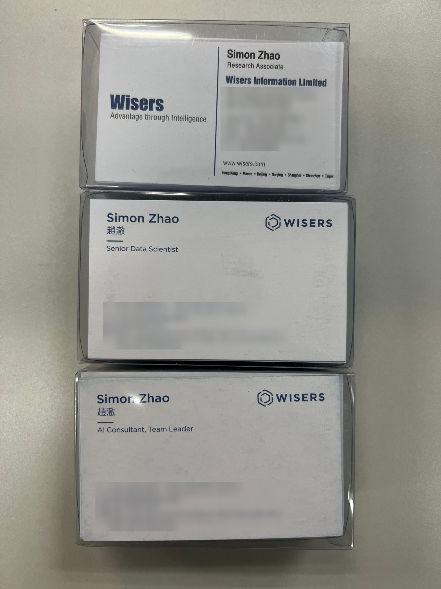
明明暗暗
说到这里，让我索性打破时间顺序，并跳出影像回忆的限制，继续回忆。在之后的半年里，我经历了间隔1-工作A-间隔2-工作B的起伏。
工作A给了我很大的挑战，包括间隔1里其实都没太闲着，而是成为A的预备期。工作的内容、节奏、模式，都与我过去的经验有很大差别，最终没能继续下去。但我很开心能有这段经历，它就像是一个紧凑的副本，逼迫我以一个极限的状态去尝试一些事情。自己是什么，不是什么，以及可以是什么；想要的是什么，不想要的是什么。对于这些问题，我快速得到了一部分答案，自信反而增长了（我觉得真正的自信来源于自我认识）。这正是我在之前漫长的6年里有所缺乏的东西。
如果用一张照片来代表这段时光，我想大概是这一张：
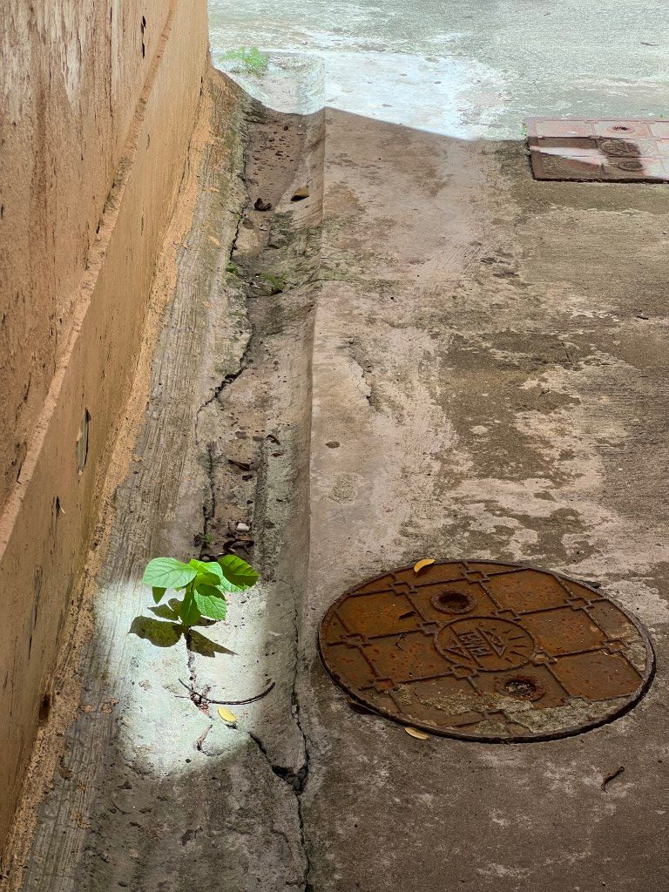
那几个月的我把自我压缩到一条缝隙之中，单单向一个方向伸展。只要那束狭窄的光还没消失，就暂时按下放弃的念头。最后那束光，是在我到达放弃的极限之前消失的。从这个角度来讲，我胜了。从其他角度上来讲，我也并没有失去什么。也是至此悟得，与一份工作的关系，恰如与人之间的关系，很多时候其实就只是不适合，不work，但这不代表你是劣人一等的。再退一步说，一个人终究会在某些方面劣人一等，但真的有全方位劣人一等这种事情吗，这是个很强的命题，我自己没有确切的答案。
至少当下来看，过程中我的收获颇丰，没白消耗那几个月。
工作A的那段时间里，生活方面也不是全然无味的。岭南炎热的夏季里没办法行山，也没有余力玩更多花样（尝试过一次皮划艇，还有一次船趴，期待下一个夏季），但也有周中让人身心舒畅的游泳及某日游完偶遇的晚霞，有一周一度的开心农场，有见缝插针地录一些歌，还有今年最满意的一张黑白摄影作品（完成于间隔1）。人生的乐趣来源于消耗，也来源于建造。
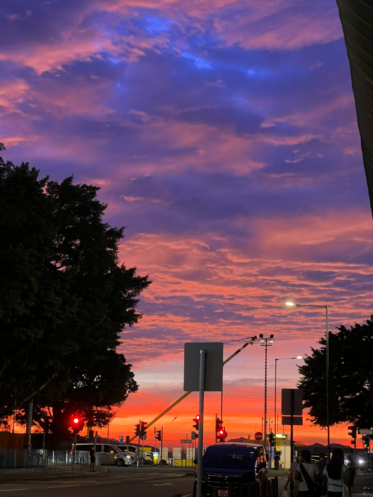
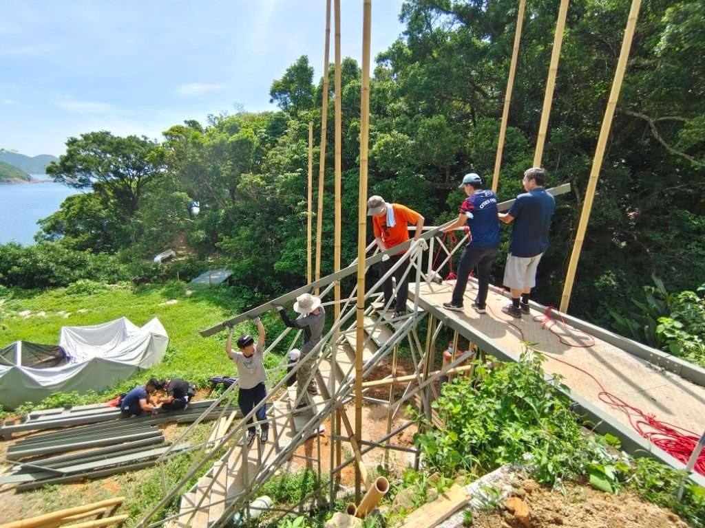
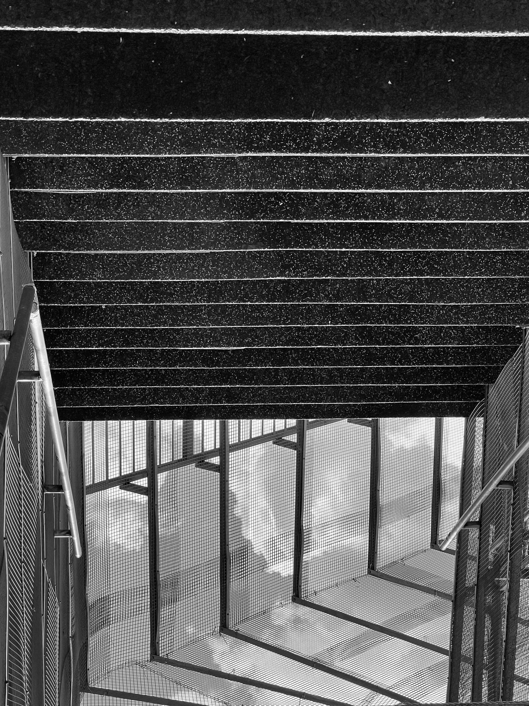
到了间隔2，我才真正有松口气的感觉。继续农场生涯，也终于又有机会带大部队走一次大东二东，欣赏到完美的芒草日落。
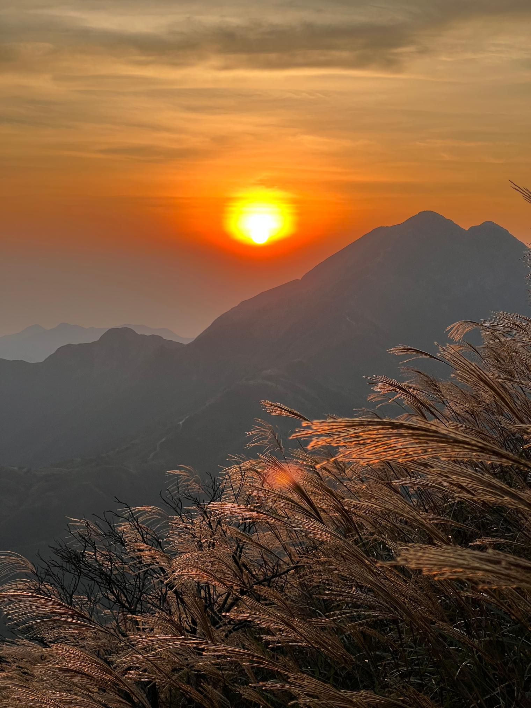
在间隔2里，我逐渐想明白了一件事，那就是不要等，去尝试。不要猜测自己适不适合、喜不喜欢，只有试过才会有答案；不要觉得自己没准备好，一个机会既然对你是开放的，你能拿到入场券，而且你有足够的动因，那就去试试看。现实世界里，信息永远是不完全的，也是不停变化的。达成任何目标都没有标准路线，没有1-2-3的关卡限制，没有最优解。锁住你的目标，去干，那么你的行动自然会带回更多的信息，这样你才可以针对性地优化、迭代你的策略，然后再干下去，直到该退出时退出（1. 目标变了 或 2. 经评估ROI不足）。
其实这个道理我早已经在各种地方见过，比如一篇我很喜欢的博文Action Produces Information，或者控制理论里基本的行动-反馈-行动闭环。直到这时，我才终于在人生大方向上，趋向这个道理的知行合一。
落到具体层面，那就是我抛弃了继续延长间隔的想法，快速进入了工作B。这一行动除了基于上述的思考，还基于另外一个很重要的结论，那就是停产、间隔的方式没办法支持我进行很有效的产出，无论是主要的职业方向，还是次要的兴趣爱好。纵观过去十几年，一个主要的工作、目标，才可以提供我一个好的运作状态，即使是兴趣爱好上的产出，也多是在我工作繁忙的时段（当然不是接近极限的情况）完成的。比如我很多业余的文章，都是在我工作上开发任务比较多的时候完成的。我的大脑需要进入这种热的状态，只要不同事情所消耗的脑力资源重叠不大就行。此外，这个时代能给人短平快刺激、反馈快感的东西实在是越来越多了，比如游戏和短视频，一旦脑子空下来，这些东西就会以最快速度、最强粘性占据人的注意力，所以人一定要主动用自己的高级脑来和低级脑抢夺认知资源。另一个选择当然是躺平，来啊快活啊，但我认识到自己毕竟不是一个这样就可以满足的人。
总之，到目前为止，我觉得自己基于这些想法的决定是正确的。其一我确实在工作B中得到了有助于将来职业规划的信息；其二我在业余也确实有了（经调整的，马上会说到）更多产出，现在这篇文字正是鲜明的例子，此外还有几次需要费脑子组织的活动聚会。
那些阴影
“体验”是一个相对中性的词，后面可以跟好的、也可以跟不好的，而“享受”一般只跟好的。但正如光与影的矛盾统一，我们自然享受阳光，但也未必不能享受阴影。何况人生不如意十之八九，总是起起落落落落落落落落，我们大多数时间都要和不好的东西打交道，有时会格外的不好，正如这该死的covid-19。
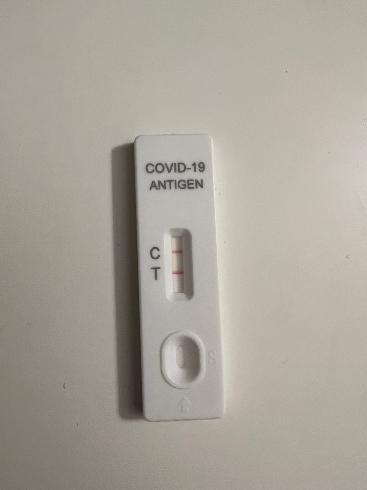
2022年的末尾，我不负众望地阳了，并且还喜获long covid，搞得两个礼拜几乎没法工作（callback前面所说“经调整”），直到此时此刻还没好利索。接着，我刚刚结束发烧才没几天，家里有长辈因covid离开了。
我能说这样的事是可以去享受（英文是enjoy）的吗？不能，真的不能。
或许换一个中文里似乎没有的词，appreciate。它有两个意思：
- recognize the full worth of. 认识到xx所有的价值
- understand (a situation) fully; grasp the full implications of. 完整、透彻地理解xx的意涵
虽然直接用这个词仍然让我不安，但使用1和2这两个释义或许是合适的。是的，我们无法享受疫情及其带来的后果，但我们（这个话题上我没能力代表任何除我以外的人）或许可以去完整、透彻地认识它们的意义。
疫情，冲垮了我们精心构建、全力运作的人类世界，造成或扩大了经济损失、社会动荡和撕裂；
疫情，让有的人身心受损、事业崩塌、痛失所爱；
疫情，让我们永久失去了三年的时光，并且我们不确定它是否还会让我们继续失去更多；
我不想接下来马上反过来，逼迫自己及读到这里的人，用积极的态度去思考。像是，疫情中我们也有所得到，比如bla bla bla。我们甚至可以去解构疫情，编出一大堆段子惹人发笑。这些都是没毛病的，我只是想说，我们是有情感的生物，从设计上便是如此。如果我们真的感到痛苦，只要能留有一根理智的弦确保痛苦不会过于伤害我们，那就让它痛苦吧，否则我们就有丧失人性的危险。
在痛苦之余，至少我们可以先试着去直面它、正视它。痛苦本身就是一种直面，除此之外，我们能做的便是去回忆、去叙述它。然后，接受它的存在，继续向前走。
时间不能治愈心中的伤口，只会让它带来的痛苦减轻。伤口，其实是我们活着的证明，它证明一些事发生过，在其中我们失去了重要的东西。失去是令人难过的，但我们也因此确认什么是重要的。而自内心觉得什么重要，在我看来，那便是爱，即使它外显出来的表达可以千变万化。
只要还存在于世，我们便可以继续去爱。